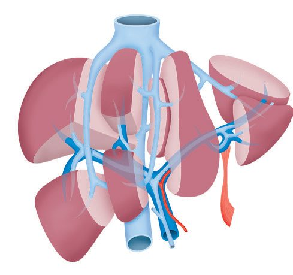
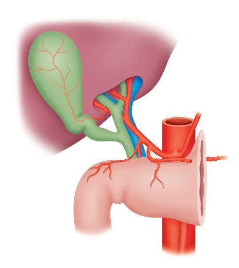

Liver Anatomy and Physiology
Summary
Liver surgery became safe when the internal anatomy was understood rather than the external shape. The liver divides into functional right and left units along a line between the gallbladder fossa and the middle hepatic vein (Cantlie's line) and Couinaud described it as eight segments, each a functional unit with its own branch of hepatic artery, portal vein and bile duct [1]. This page covers the ligaments and the segments, the hilar structures and their variants, the arterial, portal and venous supply segment by segment, the biliary confluence, and the synthetic, metabolic and excretory functions that the operative anatomy exists to preserve. Seventy-five per cent of a normal liver can be safely resected [2].
Definition
Glisson's capsule is the peritoneum that covers the liver; the bare area is the part of the posterosuperior surface not covered by it [2].
The porta hepatis is a pronounced transverse fissure on the visceral surface running between the cephalad end of the fissure for the ligamentum teres and the gallbladder fossa; the neurovascular structures and lymphatics of the hepatoduodenal ligament enter here, and the right and left hepatic ducts emerge [1].
Pathophysiology
Ligaments and surface landmarks
The falciform ligament separates the medial and lateral segments of the left lobe, attaches the liver to the anterior abdominal wall, extends to the umbilicus, and carries the remnant of the umbilical vein [2]. The ligamentum teres carries the obliterated umbilical vein to the undersurface of the liver and extends from the falciform ligament [2]. The triangular ligaments are the lateral and medial extensions of the coronary ligament on the posterior surface, and are made of peritoneum [2].
Cantlie's line (the portal fissure) runs from the middle of the gallbladder fossa to the IVC and separates the right and left lobes [2]. Bailey & Love describes the same division as running between the gallbladder fossa and the middle hepatic vein [1].
The eight segments
| Segment | Position |
|---|---|
| I | Caudate |
| II | Superior left lateral |
| III | Inferior left lateral |
| IV | Left medial (quadrate lobe) |
| V | Inferior right anteromedial |
| VI | Inferior right posterolateral |
| VII | Superior right posterolateral |
| VIII | Superior right anteromedial |
Segments II, III and IV make up the left lobe; V, VI, VII and VIII the right; segment I is the caudate [2]. The portal triad enters segments IV and V, and the gallbladder lies under those same two segments [2].

The hilum
In the most common arrangement the bile duct runs in the free edge of the hepatoduodenal ligament with the hepatic artery medially and the portal vein posteriorly, each dividing into two branches at the hilum [1]. The ABSITE Review gives the same relations for the portal triad (common bile duct lateral, portal vein posterior, proper hepatic artery medial) meeting in the hepatoduodenal ligament [2].
The right hepatic artery crosses the bile duct anteriorly or posteriorly before giving rise to the cystic artery, and multiple branches predominantly from the right hepatic artery supply the bile duct [1], which is why the duct's blood supply is at risk in hilar dissection.
The Pringle manoeuvre is clamping of the porta hepatis. It will not stop hepatic vein bleeding [2].
The boundaries of the foramen of Winslow, the entrance to the lesser sac, are the portal triad anteriorly, the IVC posteriorly, the duodenum inferiorly and the caudate lobe of the liver superiorly [2].

Arterial supply and its variants
The arterial supply is usually derived from the coeliac trunk, which divides into left gastric, common hepatic and splenic arteries; after giving off the gastroduodenal artery the hepatic artery branches at a variable level into right and left hepatic arteries, the larger right branch supplying the right lobe [1].
Two variants account for most of the abnormal anatomy, and each has a predictable location [2]:
- A right hepatic artery arising from the superior mesenteric artery is the commonest hepatic arterial variant, at about 20%; it courses behind the pancreas, posterolateral to the common bile duct. Bailey & Love describes the same vessel running to the liver on the posterior wall of the bile duct after passing behind the uncinate process and head of the pancreas [1].
- A left hepatic artery arising from the left gastric artery, also about 20%, is found medially in the gastrohepatic ligament [2]. Bailey & Love places it running in the lesser omentum from the lesser curve [1].
The middle hepatic artery is most commonly a branch of the left hepatic artery, and most primary and secondary liver tumours are supplied by the hepatic artery [2], the basis of transarterial embolisation.
Portal venous supply
The portal vein forms from the superior mesenteric vein joining the splenic vein and has no valves; the inferior mesenteric vein enters the splenic vein [2]. Bailey & Love places the confluence behind the neck of the pancreas and notes that the left branch has a longer extrahepatic course, approximately 2 cm [1].
The portal vein supplies two-thirds of hepatic blood flow. The left portal vein goes to segments II, III and IV; the right to segments V, VI, VII and VIII [2].
Hepatic venous drainage
Three hepatic veins drain into the IVC, and their territories are the reason segmental resection works [2]:
| Vein | Segments drained |
|---|---|
| Left | II, III and superior IV |
| Middle | V and inferior IV |
| Right | VI, VII and VIII |
The middle hepatic vein merges with the left hepatic vein in 80% of people before entering the IVC; in the other 20% it enters directly [2]. Bailey & Love states the same relation the other way round: the right hepatic vein can be exposed fully outside the parenchyma, while the middle and left usually terminate in a short common trunk [1].
Accessory right hepatic veins drain the medial aspect of the right lobe directly into the IVC, and the inferior phrenic veins also drain directly into it [2]. Bailey & Love notes a variable number of short inferior hepatic veins passing directly from liver to the anterior wall of the IVC, and that the right adrenal gland is adjacent to the retrohepatic IVC and drains into it, usually by a single vein [1].
The caudate lobe is the exception to everything above: it receives separate right and left portal and arterial blood flow, and drains directly into the IVC through its own hepatic veins [2].
The biliary confluence
The left hepatic duct retains a longer transverse extrahepatic portion, travelling under the edge of segment IVB from the umbilical fissure to the biliary bifurcation, which makes it more surgically accessible; it drains segments I, II, III and IV [3].
On the right there are two principal duct systems that join to form a short main right hepatic duct: the right anterior sectoral duct runs vertically and drains segments V and VIII, while the right posterior sectoral duct follows a horizontal course and drains segments VI and VII [3]. In approximately 20% of patients the right posterior sectoral duct courses posterior to the right anterior duct to join the left system [3].
The recognised variations of the confluence are trifurcation at the confluence; either right sectoral duct draining into the common hepatic duct; either right sectoral duct draining into the left hepatic duct; absence of a confluence altogether; and absence of a right hepatic duct with the right posterior sectoral duct draining into the cystic duct [4]. The caudate lobe drains through smaller ducts that typically enter both the right and left systems [3].
At the hilum the biliary bifurcation abuts the base of segment IVB and sits superior to the intrahepatic branches of the portal vein and hepatic arteries [3].
Clinical features
The liver's functions are wider than synthesis alone. Bailey & Love lists them as maintaining core body temperature and heat production; pH balance and correction of lactic acidosis; synthesis of clotting factors; glucose metabolism, glycolysis and gluconeogenesis; urea formation from protein catabolism; bilirubin formation from haemoglobin after breakdown of effete red cells in the spleen; drug and hormone metabolism and excretion; removal of gut endotoxins and foreign antigens; storage of vitamins and minerals including A, D, E, K and B12; immunological function as part of the mononuclear phagocyte system; albumin production for transport of fatty acids, steroids and waste products; angiotensin synthesis; and cytochrome P450 detoxification of contaminants and pollutants, insecticides, food additives and alcohol [1].
The signs of liver dysfunction vary with severity, aetiology and speed of onset, but commonly include jaundice, drowsiness, abdominal pain or swelling, nausea, tremor, vomiting, malaise, confusion and disorientation, bruising, peripheral oedema, and foetor hepaticus, a strong musty smell to the breath [1].
Jaundice becomes apparent when the total bilirubin exceeds 2.5, and is first evident under the tongue [2]. The maximum bilirubin reached is 30, unless there is underlying renal disease, haemolysis, or a bile duct to hepatic vein fistula [2].
Etiology
Two things are not made in the liver, and both matter to a surgeon: von Willebrand factor and factor VIII, which are made in endothelium [2]. Everything else in the clotting cascade is hepatic, which is why the prothrombin time is a synthetic function test.
Ketones are the usual energy source for the liver itself; glucose is converted to glycogen and stored, and excess glucose is converted to fat [2]. Urea is synthesised in the liver [2].
The liver stores a large amount of fat-soluble vitamins, and B12 is the only water-soluble vitamin it stores [2].
Alkaline phosphatase is normally located in the canalicular membrane, whereas nutrient uptake occurs at the sinusoidal membrane [2], which is why a cholestatic picture raises alkaline phosphatase specifically.
Kupffer cells are the liver macrophages [2].
Bile and the enterohepatic circulation
Bile contains bile salts at 85%, with proteins, phospholipids, cholesterol and bilirubin; the final composition is determined by passive reabsorption of water in the gallbladder [2].
Cholesterol is used to make bile salts, which are conjugated to taurine or glycine to improve water solubility [2]. The primary bile acids are cholic and chenodeoxycholic; the secondary bile acids, deoxycholic and lithocholic, are the primary acids dehydroxylated by gut bacteria [2].
Lecithin is the main biliary phospholipid, emulsifying fat and solubilising cholesterol; bile solubilises cholesterol and emulsifies fats to form micelles, which enter enterocytes by fusing with the membrane [2].
Bilirubin
Bilirubin is a breakdown product of haemoglobin (haemoglobin to haem to biliverdin to bilirubin) and is conjugated to glucuronic acid by glucuronyl transferase in the liver, improving water solubility; conjugated bilirubin is then actively secreted into bile [2].
Urobilinogen explains the urine colour. Conjugated bilirubin is broken down by bacteria in the terminal ileum; free bilirubin is reabsorbed, converted to urobilinogen and released in urine as urobilin, giving the yellow colour, and excess urobilinogen turns the urine dark like cola [2].
Diagnosis
The pattern of liver enzymes separates hepatitis from obstruction: hepatitis gives very high transaminases with a modest alkaline phosphatase, while obstructive jaundice gives modest transaminases with a very high alkaline phosphatase [2].
Raised unconjugated (indirect) bilirubin, usually with a normal or only mildly raised conjugated fraction, points to prehepatic causes such as haemolysis, or to hepatic deficiencies of uptake or conjugation [2]. Raised conjugated (direct) bilirubin points to secretion defects into the bile ducts, as in hepatitis, or excretion defects into the gastrointestinal tract, obstructive jaundice from gallstones, cancer or benign stricture [2].
Four inherited syndromes divide by which step fails [2]:
| Syndrome | Defect | Bilirubin raised |
|---|---|---|
| Gilbert's | Mild defect in glucuronyl transferase, abnormal conjugation | Unconjugated |
| Crigler-Najjar | Severe glucuronyl transferase deficiency, inability to conjugate; life-threatening | Unconjugated |
| Rotor's | Deficient storage ability | Conjugated |
| Dubin-Johnson | Deficient secretion ability | Conjugated |
Physiologic jaundice of the newborn is the same mechanism as Gilbert's and Crigler-Najjar in miniature, an immature glucuronyl transferase giving a high unconjugated bilirubin [2].
Thresholds and severity
Seventy-five per cent of a normal liver can be safely resected [2].
Hepatocytes in the central lobular region (acinar zone III) are the most sensitive to ischaemia [2].
Jaundice appears above a total bilirubin of 2.5 [2].
UK reference ranges for the routine liver blood tests are given by Bailey & Love as bilirubin 5 to 17 μmol/L (0.3 to 1.2 mg/dL), alkaline phosphatase 30 to 140 IU/L, and albumin 35 to 50 g/L (3.5 to 5 g/dL), with the transaminases at 5 to 40 IU/L and gamma-GT 10 to 48 IU/L [1].
Acute liver failure has a definition with a time window in it, and the window is what separates it from cirrhosis. The most widely accepted definition, from the American Association for the Study of Liver Diseases, is evidence of coagulation abnormality, usually an INR above 1.5, together with any degree of mental alteration, in a patient without pre-existing liver disease and with an illness of less than 26 weeks' duration [1].
It is rare in the developed world, with an annual incidence under 10 cases per million and a current mortality of 30 to 40% [1]. In the early stages there may be no objective signs; with severe dysfunction, clinical jaundice is associated with the neurological signs of hepatic encephalopathy, a liver flap, drowsiness, confusion and eventually coma [1].
Treatment and Management
The functional anatomy dictates what can be removed together. An extended right hepatectomy takes segments V to VIII plus IV; an extended left hepatectomy takes segments II to IV, with or without the caudate, plus V and VIII [2].
Each segment can be considered a functional unit supplied by its own branch of hepatic artery, portal vein and bile duct [1], which is what makes segment-based resection possible without devascularising the remnant.
Procedural interventions
The Pringle manoeuvre clamps the porta hepatis and controls inflow, but will not stop bleeding from a hepatic vein [2], the standard reason for continued haemorrhage after the manoeuvre has been applied.
Hilar variation must be identified before division rather than after: there are numerous variations of the hilar structures which are important in the planning and performance of liver operations [1], and both the arterial variants and the biliary confluence variants described above change what is safe to divide.
Complications
Bleeding and bile leak are the most common problems after hepatic resection [2].
Both trace back to anatomy: bleeding because the Pringle manoeuvre does not control hepatic venous backflow, and bile leak because the biliary confluence varies in ways that are not apparent until a duct has been divided.
Outcomes
The liver's capacity to be resected, 75% of a normal organ [2], rests entirely on the segmental arrangement, since each segment carries its own inflow, outflow and drainage.
Acute liver failure, by contrast, carries a current mortality of 30 to 40% [1], and the 26-week boundary in its definition is what distinguishes it from the chronic disease covered on the Cirrhosis and Portal Hypertension page.
References
- Bailey & Love's Short Practice of Surgery, 28th ed., Ch. 69 The liver
- The ABSITE Review, 2022, Ch. 31 Liver
- Sabiston Textbook of Surgery, 22nd ed., Ch. 88 Biliary System
- Sabiston Textbook of Surgery, 22nd ed., Ch. 89 The Liver